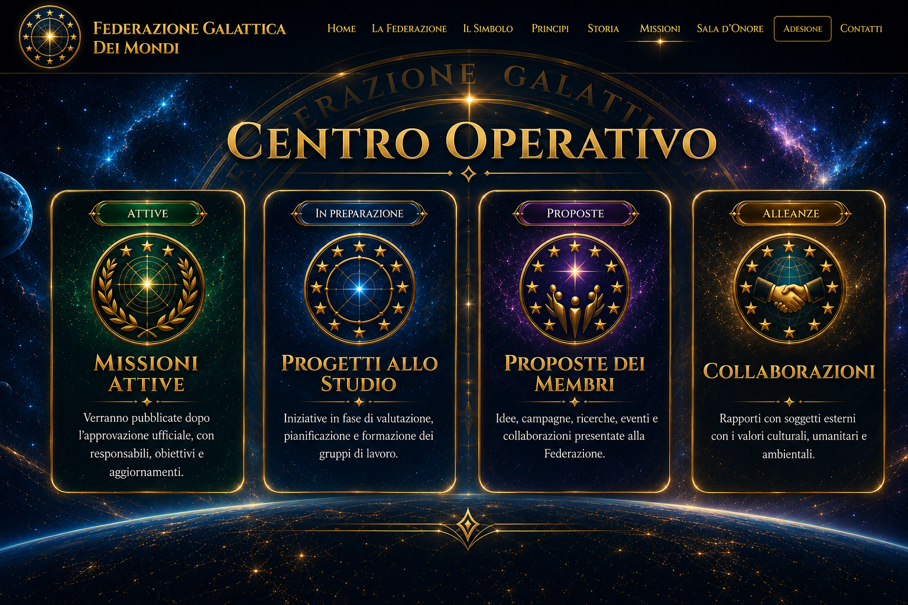

Identità, comunità e struttura
Un luogo d’incontro tra persone, competenze, visioni e progetti, con centro di riferimento sul Pianeta Terra.
Una struttura aperta, trasparente e progressiva, capace di accogliere contributi diversi senza perdere coerenza, responsabilità e unità di direzione.
Coordinatrice: Perla Genovesi. Cura della visione, dell’identità, delle relazioni e dello sviluppo generale.
Figure di riferimento attivamente coinvolte nella missione ideale, culturale e umanitaria.
Persone che hanno accettato un riconoscimento per il loro percorso e il contributo ai valori fondativi.
Missioni, ricerca, proposte, comunicazione, cultura, tutela ambientale e collaborazioni.


La Federazione riconosce nella Terra il primo luogo concreto di impegno. La visione galattica non allontana dai problemi umani: li osserva in una prospettiva più ampia, capace di unire conoscenza, protezione della vita, cooperazione e responsabilità verso le generazioni future.
Leggi i principi